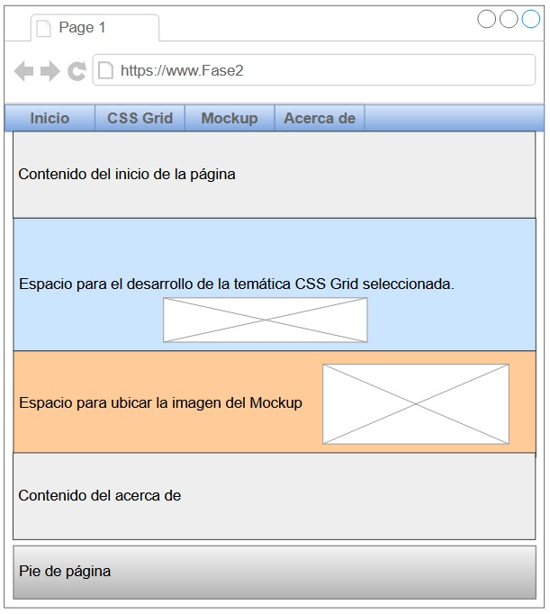

Bienvenidos al desarrollo de la fase 2
En este espacio se presentarán las evidencias de las actividades correspondientes al desarrollo de la página web en estilo One Page, la consulta del tema CSS Grid y una breve aplicación del tema, la inclusión del mockup y el uso de las etiquetas semánticas en la creación del sitio. .
CSS Grid
Grid container
Es el elemento que define el contenedor de la cuadrícula. Para crear una cuadrícula con CSS Grid, es necesario definir un elemento como grid container utilizando la propiedad display: grid.
Grid items
Son los elementos que se colocan dentro del grid container. Cada grid item se posiciona dentro de la cuadrícula utilizando líneas horizontales y verticales.
Grid lines
Son las líneas que definen los límites de las celdas en la cuadrícula. Las líneas horizontales se llaman grid rows, y las líneas verticales se llaman grid columns.
Grid tracks
Son los espacios entre dos líneas adyacentes en la cuadrícula, se dividen en filas (grid rows) y columnas (grid columns), y se utilizan para definir el tamaño de las celdas.
Grid gaps
Son los espacios en blanco entre las celdas de la cuadrícula. Se pueden definir gaps para las filas y columnas por separado utilizando las propiedades grid-row-gap y grip-column-gap, o bien utilizando la propiedad grid-gap para definir ambos de una sola vez.
Grid lines naming
Es la técnica de nombras las líneas de la cuadrícula para facilitar la definición de las celdas. Se pueden nombrar las líneas utilizando la propiedad grid-templates-rows o grid-templates-columns, y luego referirse a ellas utilizando los nombres en lugar de números.
Grid areas
Son los bloques de celdas en la cuadrícula que se pueden agrupar y asignar un nombre para facilitar la definición del diseño. Las áreas se definen utilizando la propiedad grid-template-areas.
Grid template
Es la estructura de la cuadrícula, que se define utilizando las propiedades grid-templates-rows y grid-templates-columns. La estructura se puede definir utilizando medidas absolutas, como pixeles, o medidas relativas como porcentajes.
Grid template shorthand
Es una forma abreviada de definir la estructura de la cuadrícula utilizando una sola propiedad: grid-template. Con esta propiedad se puede definir la estructura de una cuadrícula de CSS Grid de forma más compacta y legible.

Ejemplo de uso
Mockup
Este es el contenido de la sección de mockup.
Acerca de
Julián Alberto Ruiz Piedrahíta
Escuela de Ciencias Básicas, Tecnología e Ingeniería, Universidad Nacional Abierta y a Distancia UNAD
301122: Diseño de Sitios Web
Prof. Josué Ignacio Ochoa Torres